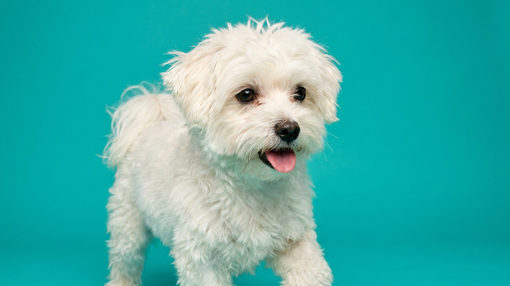

Мальтезе: почему рыжеют дорожки под глазами и как это остановить

5 июля 2026 · 3 минуты чтения · Породы собак · Уход · Собаки
Белоснежная шерсть мальтезе — и рыжие полосы под глазами, которые проявляются за считанные дни. Это не грязь и не случайность: у мальтийской болонки есть конкретные причины, по которым слёзы окрашивают шерсть, и большинство из них устраняет сам владелец — правильной рутиной ухода. Ниже — почему это происходит и что делать каждый день.
Откуда берутся рыжие слёзные дорожки у мальтезе
Слеза содержит пигменты, которые на воздухе окисляются и окрашивают белую шерсть в рыжевато-бурый цвет. У мальтезе этот процесс заметен сильнее, чем у тёмных пород, — из-за контраста. Несколько факторов усиливают слезотечение:
- Шерсть у внутреннего угла глаза. Даже один-два волоска постоянно касаются роговицы и раздражают её — глаз реагирует слезой.
- Миска и вода. Широкая миска с плоским дном заставляет мальтийскую болонку опускать мордочку глубоко, мочить шерсть вокруг глаз и носа. Стальная или керамическая миска с узким горлышком снижает намокание.
- Питание. Корм с искусственными красителями и некачественными жирами может усиливать слезотечение. Если дорожки заметно усилились после смены питания — стоит обсудить рацион с ветеринаром.
- Анатомия. У части мальтезе слёзные протоки от природы сужены или расположены так, что слеза не уходит в нос, а вытекает наружу. Это не болезнь — это особенность строения.
Ежедневная гигиена мордочки: конкретный план
Слёзные дорожки у мальтезе не исчезнут за день, но при регулярном уходе новые не накапливаются. Вот что делать каждый день:
- Утром и вечером протирайте зону под глазами влажным ватным диском или специальной салфеткой для глаз без спирта. Движение — от внутреннего угла глаза наружу.
- Шерсть у внутреннего угла глаза аккуратно убирайте пальцами или тупоносыми ножницами — она не должна касаться роговицы.
- После каждого приёма воды промокайте мордочку мягкой тканью — не давайте шерсти оставаться влажной.
- Проверьте миску: форма и материал важны. Стеклянная или стальная с высокими бортами подходит лучше пластиковой с широким дном — пластик также может накапливать бактерии.
Когда показать ветеринару: если слезотечение обильное, выделения непрозрачные или окрашенные, собака трёт глаза лапой или прищуривается — это сигнал для осмотра, не ждите.
Уход за длинной белой шерстью мальтезе без колтунов
Шерсть мальтийской болонки не имеет подшёрстка — она длинная, шелковистая и при этом быстро сваливается. Колтуны у мальтезе формируются за 2–3 дня, особенно за ушами, в паху и подмышках.
- Расчёсывайте ежедневно — щёткой с мягкой щетиной или расчёской с редкими зубьями. Начинайте от кончиков, продвигайтесь к корням.
- Зоны за ушами и в пахах проверяйте первыми: там колтуны появляются быстрее всего.
- Если колтун уже сформировался — разделяйте пальцами с кондиционером-спреем, не тяните и не режьте сами ножницами у кожи.
- Длинную шерсть на голове можно собирать в топ-узел тонкой резинкой — это убирает волосы из зоны глаз и снижает раздражение.
Купание: как часто и как сохранить белизну шерсти
Мальтезе купают раз в 1–2 недели — по мере загрязнения. Слишком частое купание сушит кожу и делает шерсть ломкой, слишком редкое — шерсть тускнеет и становится жёстче.
- Используйте шампунь, предназначенный для белой шерсти — без жёстких отбеливателей, на основе натуральных компонентов.
- После мытья обязательно кондиционируйте шерсть: это снижает трение и риск колтунов при расчёсывании.
- Сушите феном полностью — влажная шерсть у кожи создаёт среду для раздражения. Температура — тёплая, не горячая.
- Не трите шерсть полотенцем: промакивайте мягкими движениями, иначе волос ломается и запутывается.
Мальтезе с выстроенной рутиной ухода выглядит именно так, как должна: ослепительно белая шерсть, чистая мордочка, здоровый взгляд. Это занимает 10–15 минут в день — и избавляет от рыжих пятен и дорогостоящих визитов к грумеру.
🐾 Первая помощь — всегда под рукой
AnimaLife подскажет, что делать в тревожной ситуации с питомцем ещё до визита к врачу. Откройте в один тап.
Открыть AnimaLife → Открыть в MAX →
🐾 Понравился разбор?
Подпишитесь на канал — каждый день разбираем по одному тревожному симптому у кошек и собак: что в пределах нормы, а когда пора к врачу. Подпишитесь, чтобы не пропустить разбор, который может спасти здоровье вашего питомца.
Материал носит информационный характер и не заменяет очную консультацию ветеринара.
← Все статьи · Открыть AnimaLife в Telegram · RSS